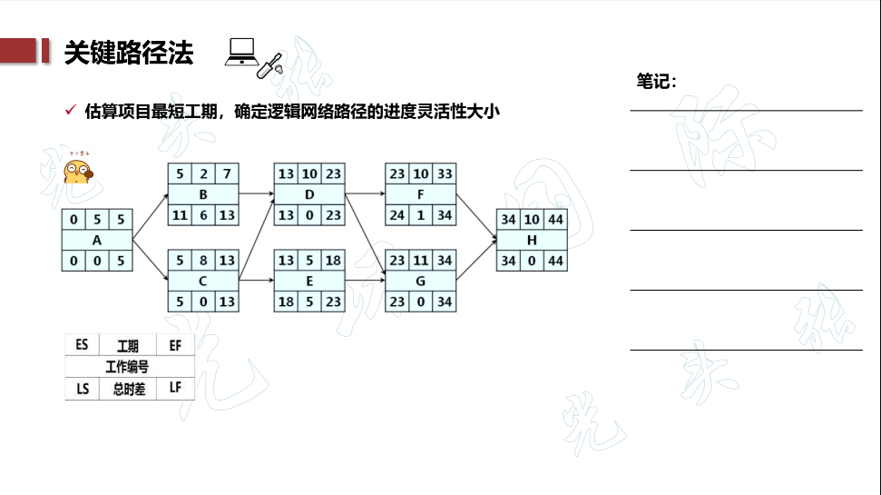

估算项目最短工期，确定逻辑网络路径的进度灵活性大小
| 面向整体活动路径 | |
|---|---|
| 关键路径 | 所有从开始到结束的路径中，单个活动工期（D）之和最大的路径 可能有多条，关键路径上的活动有延误，会影响整个项目工期 |
| 总工期 | 关键路径的活动历时之和，与最后一个活动的 EF 相等 |
| 面向单个活动 | |
| ES(earliest start) | 最早开始时间。所有开始条件都达成的最早时刻 |
| ES = max(...before.EFs) | 0 | |
| EF(earliest finish) | 最早结束时间。最早正推，起点为0 |
| EF = ES + D | |
| LF(latest finish) | 最晚结束时间。不影响总工期的最晚的结束时间 也就是说，最后一个活动 LF = EF |
| LF = min(...after.LSs) | |
| LS(latest start) | 最晚开始时间。最晚反推，起点=总工期 |
| LS = LF - D | |
| TF(time diffrence) | 活动的总时差（总浮动时间）。此活动最长可耽误的时间段，而不影响总工期 关键路径上的总时差一定为0 |
| 意义：表示了该活动最多能耽误多长时间，并不会影响总工期 | |
| TF = LS-ES | TF = LF-EF | |
| FF(free diffrence) | 自由时差。此活动最长可耽误的时间段，而不影响任何紧后活动的最早开始时间ES |
| 意义：该活动最多能耽误的时间，并不会影响后面的活动 | |
| FF = min(...after.ESs) - EF |